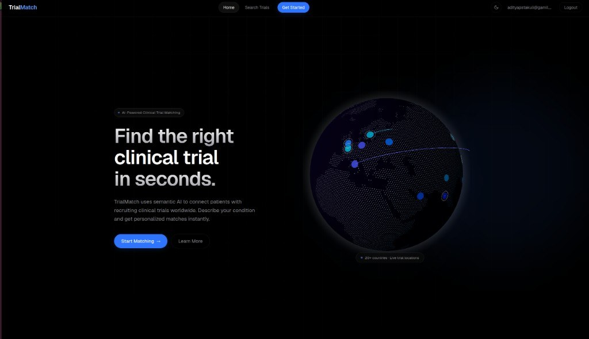

Vellore Institute of Technology, Chennai
B.Tech — Electronics and Communication Engineering
Aug 2023 – Jul 2027 (Expected) · CGPA 8.34 / 10
Portfolio / Uttarakhand, India
Software Engineer
Building backend systems, data-driven models, and agentic AI — from research to production.
Software Engineer with hands-on experience building backend systems, REST APIs, and data-driven models in Python, C++, and SQL. Strong foundation in DSA, OOP, DBMS, and Operating Systems, with a proven record of shipping tested, production-grade software. Experienced in agile delivery, CI/CD, and open-source contribution, with exposure to AI/ML, agentic systems, and workflow automation.
B.Tech — Electronics and Communication Engineering
Aug 2023 – Jul 2027 (Expected) · CGPA 8.34 / 10
Staunch Technologies Pvt. Ltd.
Samsung R&D
Checkinly (Smart Hospitality Platform)
CSIR Fourth Paradigm Institute (CSIR-4PI), Bengaluru

Case study Live
Describe a condition in plain language and get ranked, recruiting clinical trials back. A six-node LangGraph pipeline extracts a patient profile, semantically matches a 500-condition corpus, and explains every eligibility decision.
Read the case study →Project Hackathon winner
Real-time supply-chain analytics using Temporal Graph Networks and a multi-agent architecture for scraping, normalisation, and analysis. Winner — NOKIA CERONIX National Hackathon (top 5% of 878 teams).
View on GitHub ↗Open source Merged at CERN
Merged PR #302: replaced the legacy CLI parser in CERN/HSF process-monitoring tooling, preserving all 12 CLI options and passing all 14 tests. Official project contributor.
View on GitHub ↗Project Edge AI
Real-time detection pipeline with custom YOLO, person-segmentation for false-positive suppression, OCR weight extraction, and a SQLite-backed logging GUI.
View on GitHub ↗Product Live
Real-time sports-venue booking marketplace for floodlit turfs, cricket nets and indoor courts — built end to end with Razorpay payments and four launch venues onboarded.
Visit site ↗Open to roles, collaborations, and interesting problems.
adityapstakuli@gmail.com+91 8791327956